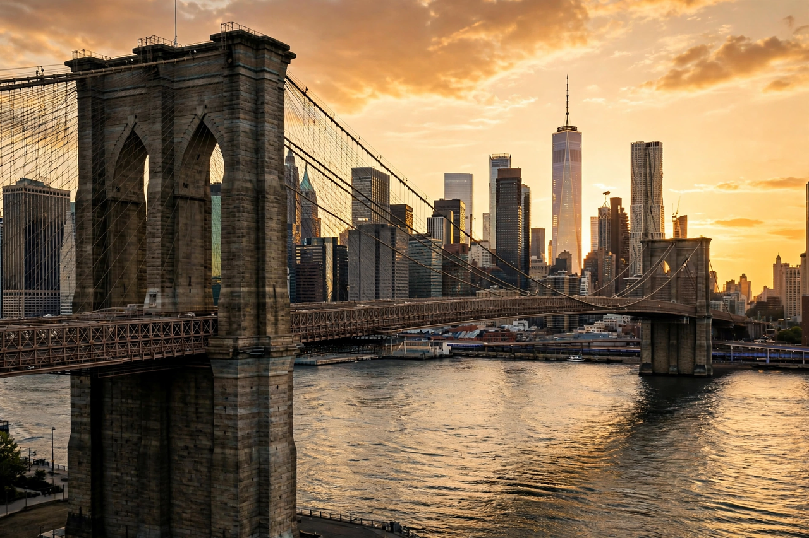

Brooklyn
Brooklyn is the most populous of the five boroughs of New York City, coextensive with Kings County in the U.S. state of New York. Located at the southwestern end of Long Island, it is separated from Manhattan by the East River. With a population of about 2.7 million (2020 census), Brooklyn would be the third-most populous city in the United States if it were still independent, as it was until its consolidation into the City of Greater New York in 1898.
 | |
| Country | United States |
|---|---|
| State | New York |
| County | Kings |
| Area | ~251 km² (97 sq mi) |
| Population (2020) | 2,736,074 |
| Named for | Breukelen, Netherlands |
History
The area was inhabited by the Lenape before Dutch settlement in the 1630s–40s; the town of Breukelen ("broken land") was chartered in 1646. Brooklyn was the site of the Battle of Long Island in August 1776, the first major battle of the American Revolutionary War after independence was declared. The city of Brooklyn grew rapidly in the 19th century as a manufacturing and port centre and a commuter suburb of Manhattan, annexing surrounding towns until it covered all of Kings County. The opening of the Brooklyn Bridge in 1883 cemented its link to Manhattan. In 1898 Brooklyn's voters narrowly approved consolidation with New York City — later dubbed the "Great Mistake of 1898" by Brooklyn nationalists.
Geography and neighbourhoods
Brooklyn's roughly seventy neighbourhoods include Brooklyn Heights and Park Slope (brownstone districts), Williamsburg and Bushwick (centres of art and nightlife), Bedford–Stuyvesant (the largest African American community in the city), Borough Park and Williamsburg's Satmar community (among the largest Orthodox Jewish populations outside Israel), Bay Ridge, Sheepshead Bay, Brighton Beach ("Little Odessa"), Crown Heights, Flatbush and Coney Island, famous for its boardwalk, amusement parks and the original Nathan's Famous hot-dog stand. Prospect Park (designed by Olmsted and Vaux), the Brooklyn Botanic Garden, and the Brooklyn Museum anchor its cultural landscape.
Culture and demographics
Brooklyn is one of the most ethnically diverse urban areas in the world; roughly a third of its residents were born outside the United States, and more than 200 languages are spoken. It has long been a centre of African American culture, jazz, hip-hop (the Notorious B.I.G., Jay-Z), literature and indie music, and since the 2000s has been strongly associated with gentrification and the global "Brooklyn brand" of artisanal and creative industries. Its sports home is the Barclays Center, home of the NBA's Brooklyn Nets; the borough still mourns the Brooklyn Dodgers, who left for Los Angeles after 1957.
See also
Categories: Brooklyn · Boroughs of New York City · Kings County, New York